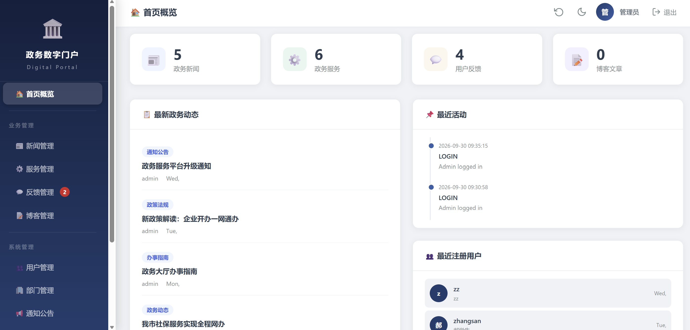
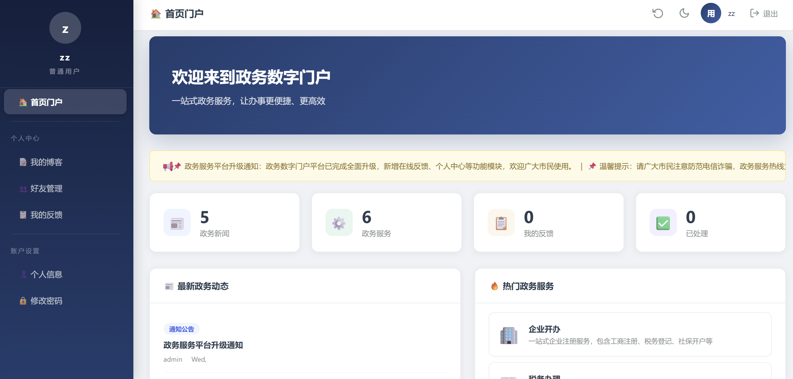

政务数字门户平台
Website · Full StackFlask + MySQL + Docker · 2026云计算实训项目 · 团队开发
基于 Flask + MySQL + Docker 技术栈构建的一站式政务服务门户，覆盖管理端与用户端双端：管理员负责新闻发布、博客审核、反馈处理、用户与部门管理、系统监控与全操作审计；市民用户可浏览政务动态与办事服务、发布博客、提交反馈、维护个人信息，形成完整的政务信息化闭环。Docker 容器化一键部署，10 分钟即可完成环境搭建上线。
打开政务系统网站 ↗
01
系统概览 · 管理端
Admin Dashboard

管理后台 · 首页概览 / 政务动态 / 最近活动
02
系统概览 · 用户端
User Portal

用户端 · 首页门户 / 政务动态统计 / 热门政务服务
首页门户欢迎横幅 + 政务新闻、政务服务数量统计，最新政务动态与热门办事服务（企业开办、税务办理等）一屏直达
我的博客普通用户发布个人博客，提交后进入管理员审核流程，状态实时可见
好友管理用户间好友添加与管理，构建站内社交关系
我的反馈向平台提交意见反馈，跟踪处理进度与官方回复
个人信息维护个人资料与头像，记录最后登录时间
账户安全自助修改密码，Session 会话统一管理
03
核心功能
Key Features
统一认证管理员与普通用户统一登录注册，基于角色的功能展示与 Session 会话管理
用户与部门管理用户增删改查、个人信息维护、最后登录时间记录，部门动态增删
新闻管理政务新闻发布、分类筛选（通知公告/政策法规/办事指南）、草稿与快速发布
博客审核流程普通用户发文需审核，状态流转 pending → published / rejected，实时通知
反馈管理用户反馈提交、处理回复、一键导出 CSV，形成服务闭环
系统监控运行时间、请求计数、数据统计可视化仪表盘
操作日志审计全操作记录：操作人、时间、IP 地址，满足政务系统安全追溯要求
响应式前端CSS 变量主题 + Flexbox/Grid 布局，多端适配，加载迅速无框架依赖
04
技术架构
Architecture & Stack
后端框架Flask 2.3.3RESTful API + Jinja2 模板渲染，轻量灵活、易于扩展
数据库MySQL 8.0.3516 张业务表，外键约束 + 索引优化，Volume 数据持久化
容器化Docker应用与数据库独立容器，setup.sh 一键部署，服务开机自启
前端HTML5 + CSS3 + JS无框架依赖、响应式设计，适配不同屏幕
安全体系RBAC + Audit Log角色权限控制、Session 管理、全操作审计日志
05
项目亮点
Highlights
一键部署setup.sh 自动化脚本，10 分钟完成环境搭建，环境隔离互不干扰
权限分级管理员直接发布，普通用户内容需审核，角色决定功能可见性
安全审计所有用户操作全量记录并支持追溯，满足政务合规标准
数据完整性统一用户表合并前后台账户，外键约束保障关联数据一致